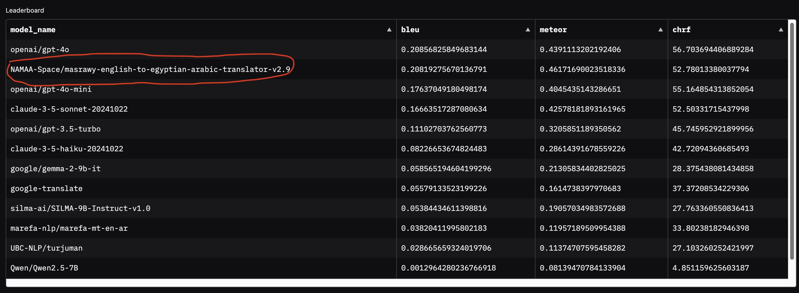

From $32,000 to $0 with Small Models and CTranslate2
Going from $32,000 to 0 cost with small models
It’s Friday and I have some time to continue working on open source tasks. I had an idea that requires translating a dataset. It’s not large - 2GB - and consists of some paragraphs from English. The average number of words is around 400 tokens per row from the 8 million rows :)
I looked into the OpenAI models to calculate how much this would cost me to translate all these with GPT-4.1 and GPT-4.1-mini, and the prices are the following: my total tokens => 8,000,000 rows * 400 tokens = 3,200,000,000. For the following calculations, I will assume input and output tokens are the same for ease of calculation. I will use the normal API, not the Batched API:
- total input tokens => 3,200,000,000
- total output tokens => 3,200,000,000
The calculation based on this date 2025-10-03
| Cost | GPT4.1 | GPT4.1-mini | GPT3.5 Turbo |
|---|---|---|---|
| Input tokens | 3,200 * 2 | 3,200 * 0.40 | 3,200 * 0.50 |
| Output tokens | 3,200 * 8 | 3,200 * 1.60 | 3,200 * 1.50 |
| Cost | GPT4.1 | GPT4.1-mini | GPT3.5 Turbo |
|---|---|---|---|
| Input tokens | 6400 | 1280 | 1600 |
| Output tokens | 25600 | 5120 | 4800 |
| Total $ cost | 32000 | 6400 | 6400 |
| Total EGP cost | 1,527,680 | 305,536 | 305,536 |
| it’s interesting that the cost of gpt4.1 mini is the same as gpt3.5 Turbo ^ ^ |
Also, this is insane - I can afford only 1000 EGP or $50 at max :)
How poor am I? Very GPU poor! 💻
I wish I had a local GPU to be able to test open source LLMs like Cohere 70B and such strong models, and I would not care about time!
I remember there is amazing work that is not even an LLM for translation, created by Ahmed Wasfy from NAMMA Community
It’s a 240M parameter small model trained to translate English into Egyptian. It was trained on more than 150,000 rows with more than 10 Million tokens for Arabic language. It competes with closed LLMs like GPT-4o and Claude-3.5-Sonnet

I tested it with my local laptop GPU 1660Ti GTX mobile version with 6GB and CPU is Core i7 gen9 from Intel with 32GB DDR4. I tested the model and it worked with PyTorch very fast and very efficiently! The translations are very similar and this is enough for the task I want to build on this translated dataset! Let’s do the math for how much this will cost on my laptop :)

PyTorch Pipeline with HF Inference through Transformers
I created the translation pipeline and tested it with these batch sizes with these settings: float16 and batch sizes = [2,4,6,8,16]. I found that even though I have enough memory to load more batches, the optimal batch size was 4 and this is because of the RAM and CPU power. I was able to process 100 examples with these results:
| Method | Number of Examples | Batch Size | GPU setup | Full time | Days need | |
|---|---|---|---|---|---|---|
| Pytorch + float16 | 100 | 8 | 1660TI laptop GPU | 60s | 55.56 Days | |
| Pytorch + float16 | 100 | 4 | 1660TI laptop GPU | 45s | 41.67 Days | |
| Pytorch + float16 + optimized version | 100 | 4 | 1660TI laptop GPU | 35s | 32.41 Days |
optimized version here i mean
model = torch.compile(model, mode="max-autotune", fullgraph=True)
model = model.eval()It’s a new feature in PyTorch 2 to accelerate the model speeds. I tried multiple settings and also the different backends but there is no huge difference. Convert to ONNX? It’s a nightmare. I did it before and the results didn’t worth the headache! I may try it when I have time.
Let’s Do Quantization
I tried to use the torchao which enables performing quantization in more stable and easier ways. I tried it a lot with my GPU but due to CUDA version it always throws this error:
1. AssertionError: Float8 dynamic activation quantization is only supported on CUDA>=8.9 and MI300+The library code is not straightforward and I don’t have time - I have just 2 days to finish this before I return to my main work.
I also faced some errors because the model I am trying to use is an old and not optimized one for these methods. It’s based on the OPUS-MT-en-ar created with marianNMT which is an efficient NMT implementation written in pure C++. The models have been converted to PyTorch using the Transformers library by Hugging Face
VLLMs and SGLang for HF translation pipeline
I searched for SGLang solution with the model and I didn’t find any help. I tried the vLLM documentation also and found the following pages: bring_your_own_model and this. The model speed was worse than normal HF tensors - it was 5 seconds more. I think there is a better way to write the vLLM version better than mine.
More search and Ctranslate magic 🎩
I wanted to give up, but let’s try a final search on how to serve Marian model. In an old forum answer I found what is called CTranslate2. They say it’s faster than HF Transformers for specific architectures by around 4-6x.
Definition: CTranslate2 is a C++ and Python library for efficient inference with Transformer models. The following model types are currently supported:
- Encoder-decoder models: Transformer base/big, M2M-100, NLLB, BART, mBART, Pegasus, T5, Whisper
- Decoder-only models: GPT-2, GPT-J, GPT-NeoX, OPT, BLOOM, MPT, Llama, Mistral, Gemma, CodeGen, GPTBigCode, Falcon, Qwen2
- Encoder-only models: BERT, DistilBERT, XLM-RoBERTa
Compatible models should be first converted into an optimized model format. The library includes converters for multiple frameworks:
Key features of Ctranslate
Fast and efficient execution on CPU and GPU
The execution is significantly faster and requires less resources than general-purpose deep learning frameworks on supported models and tasks thanks to many advanced optimizations: layer fusion, padding removal, batch reordering, in-place operations, caching mechanism, etc.
- Quantization and reduced precision
The model serialization and computation support weights with reduced precision: 16-bit floating points (FP16), 16-bit brain floating points (BF16), 16-bit integers (INT16), 8-bit integers (INT8) and AWQ quantization (INT4). - Multiple CPU architectures support
The project supports x86-64 and AArch64/ARM64 processors and integrates multiple backends that are optimized for these platforms: Intel MKL, oneDNN, OpenBLAS, Ruy, and Apple Accelerate. - Automatic CPU detection and code dispatch
One binary can include multiple backends (e.g. Intel MKL and oneDNN) and instruction set architectures (e.g. AVX, AVX2) that are automatically selected at runtime based on the CPU information. - Parallel and asynchronous execution
Multiple batches can be processed in parallel and asynchronously using multiple GPUs or CPU cores. - Dynamic memory usage
The memory usage changes dynamically depending on the request size while still meeting performance requirements thanks to caching allocators on both CPU and GPU. - Lightweight on disk
Quantization can make the models 4 times smaller on disk with minimal accuracy loss. - Simple integration
The project has few dependencies and exposes simple APIs in Python and C++ to cover most integration needs. - Configurable and interactive decoding
Advanced decoding features allow autocompleting a partial sequence and returning alternatives at a specific location in the sequence. - Support tensor parallelism for distributed inference
Very large model can be split into multiple GPUs. Following this documentation to set up the required environment.
Some of these features are difficult to achieve with standard deep learning frameworks and are the motivation for this project.
Let’s try it!
I used the following script to convert the HF version into CTranslate2 expected format:
ct2-transformers-converter --model NAMAA-Space/masrawy-english-to-egyptian-arabic-translator-v2.9 --output_dir ct2_model_masrawythen i used the model with this version
translator = ctranslate2.Translator(
"ct2_model_masrawy",
device="cuda",
compute_type="float16",
)It worked and was very fast - much, much faster!
| Method | Number of Examples | Batch Size | GPU setup | Full time | Days need | |
|---|---|---|---|---|---|---|
| Ctranslate + float16 | 100 | 8 | 1660TI laptop GPU | 11s | 10.19 days | |
| Ctranslate + float16 | 100 | 4 | 1660TI laptop GPU | 16s | 12.04 days | |
| Ctranslate | 100 | 6 | 1660TI laptop GPU | 13s | 14.81 days | |
We moved from 32.4 days to 10 days!!!
Getting help from the Titan RTX 24GB
One of my friends offered me access to his workstation which has dual GPU Titan RTX. It’s an old GPU but it’s far better than my little kobo.
I found that the optimal batch is 64 after some tries. Let’s use this and see the results. I will also increase the size from 100 samples to 1000.
| Method | Number of Examples | Batch Size | GPU setup | Full time | Days need | |
|---|---|---|---|---|---|---|
| Pytorch + float16 + optimized version | 1000 | 64 | Titan RTX | 240s | 22.22 days | |
| Ctranslate + int8 |
1000 | 64 | Titan RTX | 7.89s | 0.73 days | |
| Ctranslate + int8 + dual GPU | 1000 | 64 | Dual Titan RTX | 4.42s | 0.41 days | |
| Ctranslate + float16 | 1000 | 64 | Titan RTX | 6.46s | 0.60 days | |
| Ctranslate + float16 + dual GPU | 1000 | 64 | Dual Titan RTX | 3.72 | 0.34 days | |
| Ctranslate + int8_float16 | 1000 | 64 | Titan RTX | 6.81s | 0.63 days | |
| Ctranslate + int8_float16 + dual GPU | 1000 | 64 | Dual Titan RTX | 3.85s | 0.36 days | |
| ==We moved now from 22 days in single Titan RTX to 0.60 days!== |
Why float16 is faster than int8
Float16 Version (faster!):
- Dual GPU: 269.2 docs/sec
- Single GPU: 154.7 docs/sec
- Time for 1000 docs: 3.72 seconds
Int8 Version (slower):
- Dual GPU: 225.8 docs/sec
- Single GPU: 126.7 docs/sec
- Time for 1000 docs: 4.43 seconds
Result: Float16 is ~19% faster! (269.2 vs 225.8 docs/sec) Lower precision ≠ Always faster! I need to increase the batch size for int8 and see which batch size will be better!
Next steps!
This is just the start. I will search more and investigate how to make this faster because the 8 million rows are only 2GB and the next task is to translate 500GB :) Every second will make a huge difference!
- Use larger batch size with int8
- Use different GPU with modern architecture and better CPU
- Deep dive into vLLM
- Try the ONNX version for GPU, not CPU
- Try again with torchao
Thanks for your time! Here is the converted version on Hugging Face: ctranslate_masrawy. Small models can save your life ^ ^